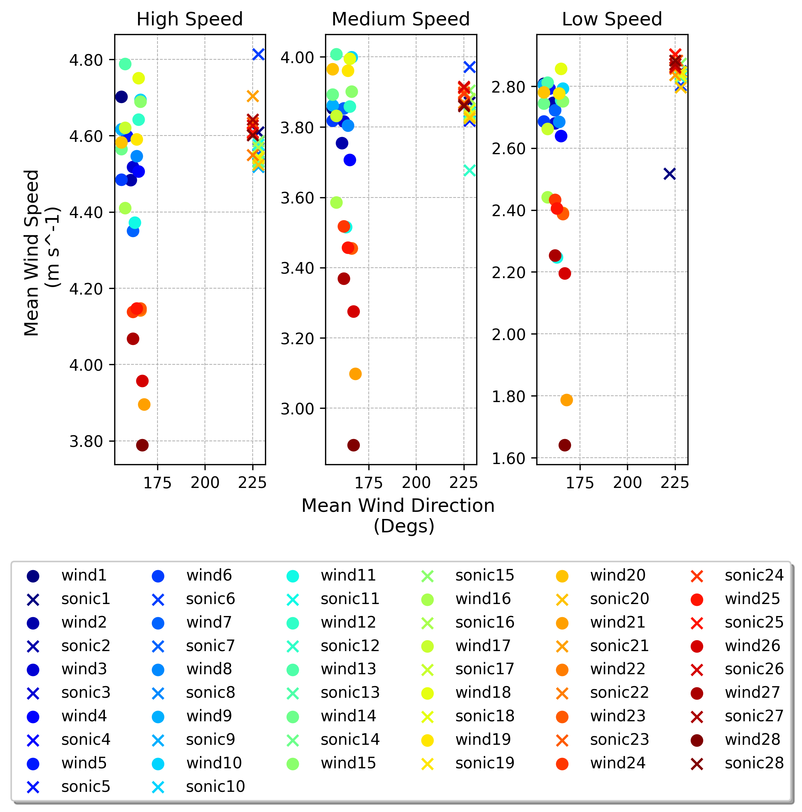
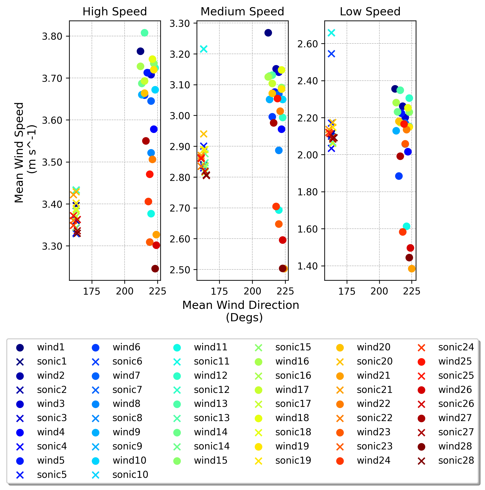

Wind Tunnel Tests
Wind Tunnel Tests#
As mentioned in the Wind Tunnel Build section, the expendable wind sensors were compared to a 3D sonic anemometer.
Through testing it was determined that there was a 1 m/s difference in wind speed from the fan between the two sections of the tunnel. Therefore, the sonic was compared to the expendable wind senors when they were in the same spatial location rather than at the same time.
Both the sonic and expendable wind senors were placed on either side of the tunnel for a 15 min test in which the three different fan speeds were ran for 5 mins. This allowed us to create two different multiple linear regression curves for each of the expendable wind sensors as compared to the sonic.
Lets see the results!
First we need to import all the packages and modules used.
from pickle import TRUE
import context
import numpy as np
import pandas as pd
from pathlib import Path
from functools import reduce
from pylab import *
import matplotlib.pyplot as plt
from matplotlib.dates import DateFormatter
from context import sonic_dir, img_dir, data_dir
from utils.wind import choice
import warnings
warnings.filterwarnings("ignore")
Next, import the sonic data from the tests.
def get_sonic(filein, i, length):
## open and set headers for sonic dataframe
header = [
"ID",
"U_eng",
"V_eng",
"W",
"units",
"sos",
"internal temp",
"ind1",
"ind2",
]
print(filein)
sonic_df = pd.read_csv(filein, names=header, encoding_errors='ignore')
file_date = filein[-15:-7]
## parse datetime from timestampe in file name
decimal_end_hour = float(int(file_date[-2:]) / 4)
decimal_end_deciseconds = decimal_end_hour * 60 * 60 / 0.1 # decimal end hour
decimal_start_hour = (
(decimal_end_deciseconds - len(sonic_df)) / 60 / 60 * 0.1
) # decimal start hour
end_hour = gettime(decimal_end_hour)
start_hour = gettime(decimal_start_hour)
# print(f"start time {start_hour}")
# print(f"end time {end_hour}")
## define stat and end date time for pandas
start_datetime = (
f"20{file_date[:2]}-{file_date[2:4]}-{file_date[4:6]}-T{start_hour}"
)
end_datetime = f"20{file_date[:2]}-{file_date[2:4]}-{file_date[4:6]}-T{end_hour}"
## create dataetime array and set as dataframe index
sonic_date_range = pd.date_range(
start_datetime, end_datetime, periods=len(sonic_df)
)
if i == length-1:
# start_offest = pd.Timestamp(start_hour[2:])
diff = sonic_date_range[-1] - sonic_date_range[0]
diff = pd.Timedelta(minutes=30) - diff
sonic_date_range = sonic_date_range - diff
# print(diff)
# print(sonic_date_range[-1])
else:
pass
# sonic_date_range = sonic_date_range + diff
sonic_df = sonic_df.set_index(pd.DatetimeIndex(sonic_date_range))
sonic_df = sonic_df.dropna()
del sonic_df["ID"]
del sonic_df["units"]
del sonic_df["ind1"]
del sonic_df["ind2"]
sonic_df["U_eng"] = sonic_df["U_eng"].replace("+", "")
sonic_df["V_eng"] = sonic_df["V_eng"].replace("+", "")
sonic_df["W"] = sonic_df["W"].replace("+", "")
sonic_df = sonic_df.apply(pd.to_numeric) # convert all columns of DataFrame
## convert u and v to wind speed and direction
sonic_df["U_eng"][(sonic_df["U_eng"] > 20) | (sonic_df["U_eng"] < -20)] = sonic_df[
"U_eng"
].mean()
sonic_df["V_eng"][(sonic_df["V_eng"] > 20) | (sonic_df["V_eng"] < -20)] = sonic_df[
"V_eng"
].mean()
sonic_df["U"] = sonic_df["V_eng"] * -1
sonic_df["V"] = sonic_df["U_eng"]
# wsp = np.sqrt((sonic_df["U"] ** 2) + (sonic_df["V"] ** 2))
wsp = ((sonic_df["U"] ** 2) + (sonic_df["V"] ** 2)) ** 0.5
sonic_df["wsp"] = wsp
# wdir = ((180 / np.pi) * np.arctan2(sonic_df["U"], sonic_df["V"]))
wdir = 180 + ((180 / np.pi) * np.arctan2(sonic_df["U"], sonic_df["V"]))
# wdir[wdir <= 0] = wdir + 360
sonic_df["wdir"] = wdir
sonic_df = sonic_df.reset_index()
return sonic_df
Read in cup data and split into the three different tests using time stamps recorded.
for i in range(0,len(c[0])):
times_in = Path(str(data_dir)+"_20"+str(c[0][i])+"\\"+"time\\"+str(c[0][i])+".txt", sep="\t")
times = pd.read_csv(times_in)
times = times. apply(pd.to_datetime)
for r in range(0,len(c[1][i])):
cupspeed1, cupspeed2, cupspeed3, cupdir1, cupdir2, cupdir3, cuptime1, cuptime2, cuptime3 = [], [], [], [],[], [],[], [],[]
cup_in = sorted(
Path(str(data_dir) +"_20"+str(c[0][i])+ f"\\WIND{c[1][i][r]}\\").glob(f"20{c[0][i]}*.TXT")
)
#print(str(data_dir) + f"\\WIND{ubc_winds[i]}\\")
#print(cup_in)
filein = str(cup_in[0])
cup_df = pd.read_csv(filein, sep="\t")
cup_df[["wsp", "wdir"]] = cup_df[["wsp", "wdir"]].apply(pd.to_numeric)
cup_df["time"] = pd.to_datetime(cup_df["time"], format = "%H:%M:%S").dt.time
cup_df["wsp"] = cup_df["wsp"] * 0.44704 ## convert to m\s
cup_df["wdir"] = cup_df["wdir"] - wdir_correction
cup_df["wdir"][cup_df["wdir"] < 0] = cup_df["wdir"] + 360
time1 = pd.to_datetime(times.iloc[r,0])
time2 = pd.to_datetime(times.iloc[r,1])
time3 = pd.to_datetime(times.iloc[r,2])
#print(time1, time2,time3)
speedtime1 = (time2-time1).seconds
speedtime2 = speedtime1 + (time3-time2).seconds
seconds = []
for m in range(len(cup_df.index)):
secondsnew = (cup_df["time"][m].hour*60+cup_df["time"][m].minute)*60+cup_df["time"][m].second
seconds.append(secondsnew)
seconds = pd.DataFrame(seconds)
for x in range(len(cup_df)):
if seconds.iloc[x,0] < speedtime1:
cupspeed1.append(cup_df["wsp"][x])
cupdir1.append(cup_df["wdir"][x])
cuptime1.append(cup_df["time"][x])
elif (seconds.iloc[x,0] > speedtime1 and seconds.iloc[x,0] < speedtime2):
cupspeed2.append(cup_df["wsp"][x])
cupdir2.append(cup_df["wdir"][x])
cuptime2.append(cup_df["time"][x])
elif seconds.iloc[x,0] > speedtime2:
cupspeed3.append(cup_df["wsp"][x])
cupdir3.append(cup_df["wdir"][x])
cuptime3.append(cup_df["time"][x])
cups1 = pd.DataFrame({"time":cuptime1,"wsp": cupspeed1,"wdir":cupdir1})
cups2 = pd.DataFrame({"time":cuptime2,"wsp": cupspeed2,"wdir":cupdir2})
cups3 = pd.DataFrame({"time":cuptime3,"wsp": cupspeed3,"wdir":cupdir3})
cup_wsp_speed1.append(round(cups1["wsp"].mean(),3))
cup_wsp_speed2.append(round(cups2["wsp"].mean(),3))
cup_wsp_speed3.append(round(cups3["wsp"].mean(),3))
cup_wdir_speed1.append(round(cups1["wdir"].mean(),0))
cup_wdir_speed2.append(round(cups2["wdir"].mean(),0))
cup_wdir_speed3.append(round(cups3["wdir"].mean(),0))
wind_sens.append(f"wind{r+1}")
Match sonic data to cup data for the three different tests.
for i in range(0,len(s[0])):
for r in range(0,len(s[1][i])):
for q in range(len(tests)):
print(str(sonic_dir)+f"\\"+"sonic"+str(q+1)+str(s[0][i])+"wind"+str(s[1][i][r]))
sonic_in = sorted(
Path(str(sonic_dir)+f"\\").glob("sonic"+str(q+1)+str(s[0][i])+str(s[1][i][r])+".TXT")
)
print(f"wind{s[1][i][r]}")
print(sonic_in)
filein = str(sonic_in[0])
sonic_df = pd.read_csv(filein, sep=",")
sonic_df.iloc[:,8] = sonic_df.iloc[:,8].apply(pd.to_numeric)
sonic_df.iloc[:,9] = sonic_df.iloc[:,9].apply(pd.to_numeric)
sonic_df.iloc[:,0] = pd.to_datetime(sonic_df.iloc[:,0], format = "%Y-%m-%d %H:%M:%S").dt.time
if q+1 == 1:
sonic_mean_wsp1.append(round(sonic_df.iloc[:,8].mean(), 3))
sonic_mean_wdir1.append(round(sonic_df.iloc[:,9].mean(), 0))
elif q+1 == 2:
sonic_mean_wsp2.append(round(sonic_df.iloc[:,8].mean(), 3))
sonic_mean_wdir2.append(round(sonic_df.iloc[:,9].mean(), 0))
elif q+1 ==3:
sonic_mean_wsp3.append(round(sonic_df.iloc[:,8].mean(), 3))
sonic_mean_wdir3.append(round(sonic_df.iloc[:,9].mean(), 0))
sonic_sens.append(f"sonic{r+1}")
Plot sonic and cup data for the same position for all three fan speeds.
fig = plt.figure(figsize=(12, 8)) # (Width, height) in inches.
fig = plt.title(
f"Position 2 for Cups",
y=0.9,
)
cmap = cm.get_cmap("jet", len(sonic_mean_wdir1))
colors = []
for i in range(cmap.N):
rgba = cmap(i)
# print(matplotlib.colors.rgb2hex(rgba))
colors.append(matplotlib.colors.rgb2hex(rgba))
fig, ax = plt.subplots(1, 3)
ax[0].yaxis.set_major_formatter(FormatStrFormatter('%.2f'))
ax[1].yaxis.set_major_formatter(FormatStrFormatter('%.2f'))
ax[2].yaxis.set_major_formatter(FormatStrFormatter('%.2f'))
color = colors[i]
for i in range(len(sonic_mean_wdir1)):
ax[0].scatter(
cup_wdir_speed1[i],
cup_wsp_speed1[i],
label=f"wind{labs[i]}",
color=colors[i],
s=50,
zorder=10,
)
ax[0].scatter(
sonic_mean_wdir1[i],
sonic_mean_wsp1[i],
label=f"sonic{labs[i]}",
color=colors[i],
s=50,
zorder=10,
marker="x",
)
ax[1].scatter(
cup_wdir_speed2[i],
cup_wsp_speed2[i],
label=f"wind{labs[i]}",
color=colors[i],
s=50,
zorder=10,
)
ax[1].scatter(
sonic_mean_wdir2[i],
sonic_mean_wsp2[i],
label=f"sonic{labs[i]}",
color=colors[i],
s=50,
zorder=10,
marker="x",
)
ax[2].scatter(
cup_wdir_speed3[i],
cup_wsp_speed3[i],
label=f"wind{labs[i]}",
color=colors[i],
s=50,
zorder=10,
)
ax[2].scatter(
sonic_mean_wdir3[i],
sonic_mean_wsp3[i],
label=f"sonic{labs[i]}",
color=colors[i],
s=50,
zorder=10,
marker="x",
)
ax[1].legend(
loc="lower center",
bbox_to_anchor=(0.5, -0.8),
ncol=6,
fancybox=True,
shadow=True,
)
ax[0].set_ylabel("Mean Wind Speed \n (m s^-1)", fontsize=12)
ax[1].set_xlabel("Mean Wind Direction \n (Degs)", fontsize=12)
ax[0].grid(zorder=1, linestyle="dashed", lw=0.5)
ax[1].grid(zorder=1, linestyle="dashed", lw=0.5)
ax[2].grid(zorder=1, linestyle="dashed", lw=0.5)
ax[0].set_title("High Speed")
ax[1].set_title("Medium Speed")
ax[2].set_title("Low Speed")
plt.subplots_adjust(left=0.1,
bottom=0.1,
right=0.9,
top=0.9,
wspace=0.4,
hspace=0.4)
plt.savefig(
str(img_dir) + f"\\position1-scatter.png",
dpi=300,
bbox_inches="tight",
)
 